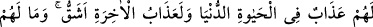
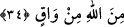
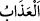
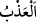

“Ve onlar doğru yoldan” Hakk’ın yolundan “alıkonuldular. Allah kimi saptırırsa”
yoluna girip girmeme konusunda yüzüstü bırakırsa “artık onu doğru yola iletecek
yoktur.” Artık ona yol gösterebilecek başarıya ulaştırabilecek bir kimse yoktur.
Müfti Sa‘dî şöyle der: “Ehl-i sünnet’e göre saptırma (ıdlâl) fiilinin dalâleti yaratma
olarak, aynı şekilde hidâyeti de ‘hidâyete ermeyi yaratmak’ olarak tefsir edilmesine
mâni yoktur.”
34. Dünya hayatında onlara sadece bir azap vardır. Âhiret azâbı ise daha
şiddetlidir. Onları Allah’tan (O’nun azâbından) koruyacak kimse de yoktur.
“Dünya hayatında onlara sadece” ölüm, esaret ve başlarına gelecek başka bir takım
musîbet ve mihnetler gibi “azap vardır.” Bunlar ancak onların inkârlarına verilmiş bir
cezâ olarak kendilerine ulaştığı için azap diye isimlendirilmiştir.
(
) kelimesi Arapça’da kök itibariyle mâni olmak mânâsındaki (
)’den
gelmektedir. Tatlı suya ‘el-azb’ denmesi, susuzluğa mâni olduğu içindir. Cezâya azâb
denmesi ise hem cezalandırılan kişinin hem de başkalarının benzer bir fiili işlemesine
mâni olmasından ileri gelmektedir.
et-Te’vîlâtü’n-Necmiyye’de şöyle denilir: “Buradaki azâb, Allah’tan uzaklık,
perdelenmişlik, gaflet, cehâlet, nefse, hevâya, dünyaya, cin ve insan şeytanlarına kulluk
etme azâbıdır.”
“Âhiret azâbı ise” dâimî olduğu için “daha şiddetlidir” ve daha zordur. Bu azâb,
cehennem azâbıdır. Allah’tan kopma ateşinin azâbıdır. O’ndan uzak olmanın verdiği
elemdir. O’na itâat etmede gösterilen tembelliğin verdiği acıdır. Çok günah ve masıyet
işlemenin ve büyük kayıplara uğramanın getirdiği pişmanlıktır. Derecelerden düşüp
derekelere inmenin verdiği azaptır.
“Onları Allah’tan” O’nun azâbından “koruyacak kimse” koruyucu ve mâni “de
yoktur” ki azaptan kurtulabilsinler.
et-Te’vîlât’ta şöyle denilir: “Onları Allah’tan” yani, Allah’ın dünyada yüzüstü
yardımsız bırakmasından, âhirette de azâb etmesinden “koruyacak kimse de yoktur” ki
onları yüzüstü kalmaktan ve azâba dûçâr olmaktan koruyabilsin.”
Mîrâc hadisinde şöyle bir ifade vardır:
“Hz. Peygamber daha sonra bir vâdîye geldi. Orada garip bir ses duydu ve “Ey
Cebrâil, bu ses de nedir?” diye sordu. Cebrâil (a.s.) şöyle cevap verdi: “Bu ses,
cehennemin sesidir. Şöyle diyor:
Ya Rab! Bana âid olanları, bana vaad ettiklerini getir. Çünkü zincirlerim,
bukağılarım, kavurucu ateşim, kaynamış suyum, irinim ve kanlı irinim fazlalaştı.